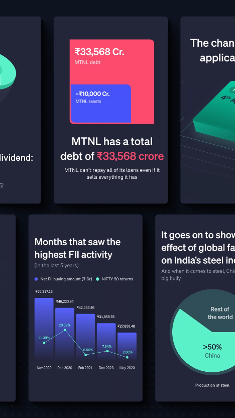

Groww
Helping Groww boost engagement on their app
M-01
2x
Website traffic
M-02
30%
increase in average session duration
M-03
40%
reduction in page load time across the website
M-04
2x
Increase in revenue
- Status
- Work in progress
- Deliverables
- Landing pages, stocks feed, financial calculators, Groww Stories and much more
- Duration
- 1 year
- Year
- 2024 – present
- Project scope
- Growth design
- UI design
- Research
- Product strategy
- Design system
Growth design for India's largest stock broker: a news feed inside the app, Stories that turn market events into something a first-time investor can read, and calculators that explain their own numbers.
THE BRIEF
Groww is India’s largest stockbroking platform and the go-to investing app for millions of Indians. It empowers users to invest in stocks, mutual funds, ETFs, and more through a clean, intuitive digital experience, making what was once complex feel refreshingly simple. Backed by marquee global investors, Groww has rapidly grown into one of the country’s most trusted and exciting fintech unicorns.
The company is gearing up for its IPO, and is on a mission to make investing accessible, transparent, and effortless for a new generation ready to take control of their financial future in a growing, ambitious India.
Groww Feed
We built a dedicated financial news feed within the Groww app to serve all users with timely and relevant market insights. This feature was designed to enable market research within the app and drive informed investment decisions.
Content structure and segmentation
The content was organised into distinct buckets, each acting as a publisher. This enabled users to filter news based on their interests and investment styles.
Groww Stories
As millions of retail investors began entering India’s stock market, Groww identified a clear need to make financial news accessible to these investors. This sparked the creation of Groww Stories - a feature designed to turn financial news like - market events, company results, IPOs and much more into clear, visually engaging narratives.
This feature is built for mobile and designed for speed, these bite sized stories help bridge the gap between financial markets and financial literacy while staying timely, accurate and easy to consume.

XIRR Calculator
The XIRR calculator is one of Groww’s most used tools - but like many financial calculators, the existing version risked overwhelming users with numbers. Our redesign focused on making the experience intuitive and reassuring.
By improving the flow of information and enhancing the overall UI, we focussed on making XIRR easier to understand for the users. A key addition was a dynamic wealth projection visualisation with the intent to help users understand their XIRR and associate it to their investment growth.